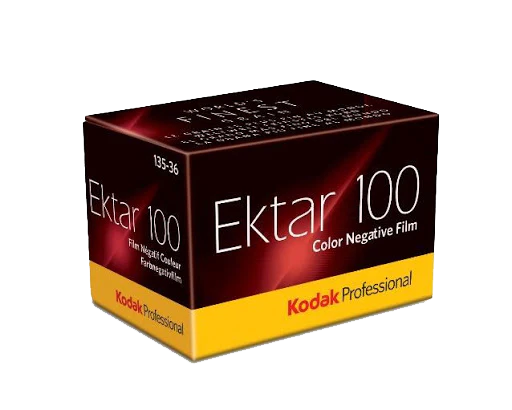
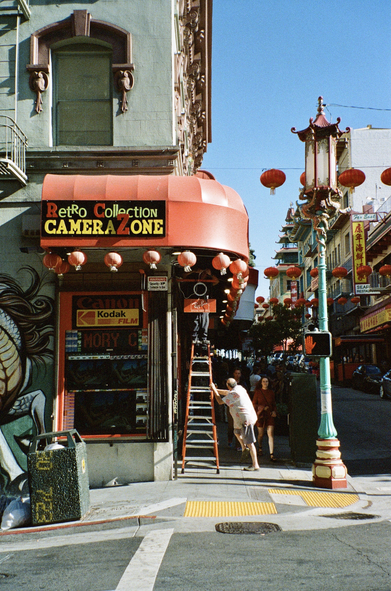
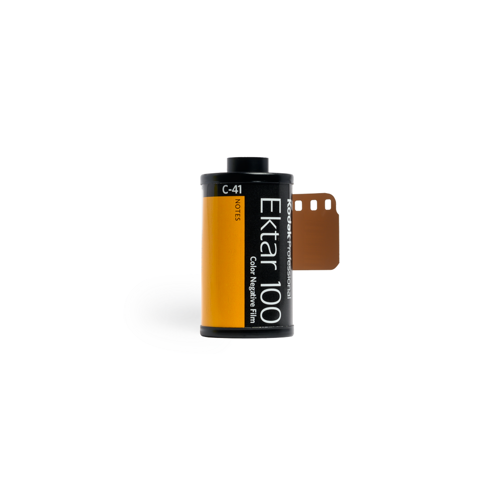

.𖥔 ݁ ˖ Film roll ۫ ׅ ✧

This page has a prerequisite reading so if you're here and you haven't been to my film camera go back and
read that one first, this will make much more sense. I started to shoot film in 2019, and till this day I
still have not found a roll of 35mm film that I love more than Kodak Ektar 100. I've never shot a roll of
this film that I didn't like, and that is not an exaggeration. That being said, I try to save it for more
special occasions due to the price, but I always look forward to shooting this roll. Here are some of my
favourite photos with this film:
⠀⠀⠀. . ﾟ . . ✦ , .
⠀⠀⠀⠀⠀⠀⠀⠀⠀⠀⠀⠀⠀⠀⠀⠀⠀ * .. . ✦⠀ , * ⠀
⠀⠀⠀. . ﾟ . . ✦ , .
⠀⠀⠀⠀⠀⠀⠀⠀⠀⠀⠀⠀⠀⠀⠀⠀⠀ * .. . ✦⠀ , * ⠀


